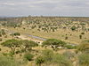

savanna

Has synonym(s): savannah
Definition: A savanna or savannah is a mixed woodland-grassland (i.e. grassy woodland) ecosystem characterised by the trees being sufficiently widely spaced so that the canopy does not close. The open canopy allows sufficient light to reach the ground to support an unbroken herbaceous layer consisting primarily of grasses. According to Britannica, there exists four savanna forms; savanna woodland where trees and shrubs form a light canopy, tree savanna with scattered trees and shrubs, shrub savanna with distributed shrubs, and grass savanna where trees and shrubs are mostly nonexistent.Savannas maintain an open canopy despite a high tree density. It is often believed that savannas feature widely spaced, scattered trees. However, in many savannas, tree densities are higher and trees are more regularly spaced than in forests. The South American savanna types cerrado sensu stricto and cerrado dense typically have densities of trees similar to or higher than that found in South American tropical forests, with savanna ranging from 800 to 3300 trees per hectare (trees/ha) and adjacent forests with 800–2000 trees/ha. Similarly Guinean savanna has 129 trees/ha, compared to 103 for riparian forest, while Eastern Australian sclerophyll forests have average tree densities of approximately 100 per hectare, comparable to savannas in the same region.Savannas are also characterised by seasonal water availability, with the majority of rainfall confined to one season; they are associated with several types of biomes, and are frequently in a transitional zone between forest and desert or grassland, though they're mostly a transition between desert to forest. Savanna covers approximately 20% of the Earth's land area. Unlike the prairies in North America and steppes in Eurasia, which would feature cold winters, savannahs are mostly located in areas having warm to hot climates, such as those in Africa, Australia, Thailand, South America and India.
Source: Wikipedia
Wikipedia Page (Something wrong with this association? Let us know.)
Wikidata Page (Something wrong with this association? Let us know.)